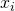

Linear regression is one of the most basic, and yet most useful approaches for predicting a single quantitative (real-valued) variable given any number of real-valued predictors. This article presents the basics of linear regression for the "simple" (single-variable) case, as well as for the more general multivariate case. The companion code in Python implements the techniques described in the article on simulated and realistic data sets. The code is self-contained, using only Numpy as a dependency.
Simple linear regression
The most basic kind of regression problem has a single predictor (the
input) and a single outcome. Given a list of input values
 and corresponding output values  , we have to find
parameters m and b such that the linear function:
, we have to find
parameters m and b such that the linear function:
![\[\hat{y}(x) = mx + b\]](../../images/math/2dabbcda3b1953b08211f7e334698366d647d697.png)
Is "as close as possible" to the observed outcome y. More concretely, suppose we get this data [1]:
We have to find a slope m and intercept b for a line that approximates this data as well as possible. We evaluate how well some pair of m and b approximates the data by defining a "cost function". For linear regression, a good cost function to use is the Mean Square Error (MSE) [2]:
![\[\operatorname{MSE}(m, b)=\frac{1}{n}\sum_{i=1}^n(\hat{y_i} - y_i)^2\]](../../images/math/e4b7b4ce3abd90f20144e6ab468b7870cedf3b07.png)
Expanding , we get:
Let's turn this into Python code (link to the full code sample):
def compute_cost(x, y, m, b):
"""Compute the MSE cost of a prediction based on m, b.
x: inputs vector
y: observed outputs vector
m, b: regression parameters
Returns: a scalar cost.
"""
yhat = m * x + b
diff = yhat - y
# Vectorized computation using a dot product to compute sum of squares.
cost = np.dot(diff.T, diff) / float(x.shape[0])
# Cost is a 1x1 matrix, we need a scalar.
return cost.flat[0]
Now we're faced with a classical optimization problem: we have some parameters (m and b) we can tweak, and some cost function we want to minimize. The topic of mathematical optimization is vast, but what ends up working very well for machine learning is a fairly simple algorithm called gradient descent.
Imagine plotting as a 3-dimensional surface, and picking some random point on it. Our goal is to find the lowest point on the surface, but we have no idea where that is. A reasonable guess is to move a bit "downwards" from our current location, and then repeat.
"Downwards" is exactly what "gradient descent" means. We make a small change to our location (defined by m and b) in the direction in which decreases most - the gradient [3]. We then repeat this process until we reach a minimum, hopefully global. In fact, since the linear regression cost function is convex we will find the global minimum this way. But in the general case this is not guaranteed, and many sophisticated extensions of gradient descent exist that try to avoid local minima and maximize the chance of finding a global one.
Back to our function, . The gradient is defined as the vector:
To find it, we have to compute the partial derivatives of MSE w.r.t. the learning parameters m and b:
And then update m and b in each step of the learning with:
Where  is a customizable "learning rate", a hyperparameter. Here is
the gradient descent loop in Python. Note that we examine the whole data set in
every step; for much larger data sets, SGD (Stochastic Gradient Descent) with
some reasonable mini-batch would make more sense, but for simple linear
regression problems the data size is rarely very big.
is a customizable "learning rate", a hyperparameter. Here is
the gradient descent loop in Python. Note that we examine the whole data set in
every step; for much larger data sets, SGD (Stochastic Gradient Descent) with
some reasonable mini-batch would make more sense, but for simple linear
regression problems the data size is rarely very big.
def gradient_descent(x, y, nsteps, learning_rate=0.1):
"""Runs gradient descent optimization to fit a line y^ = x * m + b.
x, y: input data and observed outputs.
nsteps: how many steps to run the optimization for.
learning_rate: learning rate of gradient descent.
Yields 'nsteps + 1' triplets of (m, b, cost) where m, b are the fit
parameters for the given step, and cost is their cost vs the real y.
"""
n = x.shape[0]
# Start with m and b initialized to 0s for the first try.
m, b = 0, 0
yield m, b, compute_cost(x, y, m, b)
for step in range(nsteps):
yhat = m * x + b
diff = yhat - y
dm = learning_rate * (diff * x).sum() * 2 / n
db = learning_rate * diff.sum() * 2 / n
m -= dm
b -= db
yield m, b, compute_cost(x, y, m, b)
After running this for 30 steps, the gradient converges and the parameters barely change. Here's a 3D plot of the cost as a function of the regression parameters, along with a contour plot of the same function. It's easy to see this function is convex, as expected. This makes finding the global minimum simple, since no matter where we start, the gradient will lead us directly to it.
To help visualize this, I marked the cost for each successive training step on the contour plot - you can see how the algorithm relentlessly converges to the minimum
The final parameters learned by the regression are 2.2775 for m and 6.0028 for b, which is very close to the actual parameters I used to generate this fake data with.
Here's a visualization that shows how the regression line improves progressively during learning:

Evaluating how good the fit is
In statistics, there are many ways to evaluate how good a "fit" some model is on the given data. One of the most popular ones is the r-squared test ("coefficient of determination"). It measures the proportion of the total variance in the output (y) that can be explained by the variation in x:
This is trivial to translate to code:
def compute_rsquared(x, y, m, b):
yhat = m * x + b
diff = yhat - y
SE_line = np.dot(diff.T, diff)
SE_y = len(y) * y.var()
return 1 - SE_line / SE_y
For our regression results, I get r-squared of 0.76, which isn't too bad. Note that the data is very jittery, so it's natural the regression cannot explain all the variance. As an interesting exercise, try to modify the code that generates the data with different standard deviations for the random noise and see the effect on r-squared.
An analytical solution to simple linear regression
Using the equations for the partial derivatives of MSE (shown above) it's possible to find the minimum analytically, without having to resort to a computational procedure (gradient descent). We compare the derivatives to zero:
And solve for m and b. To make the equations easier to follow, let's introduce a bit of notation. is the mean value of x across all samples. Similarly is the mean value of y. So the sum is actually . Now let's take the second equation from above and see how to simplify it:
Similarly, for the partial derivative by m we can reach:
![\[\frac{\partial \operatorname{MSE}}{\partial m}= 2m\overline{x^2} + 2b\bar{x} - 2\overline{xy} = 0\]](../../images/math/d9545273e11c9e179794f943e2c972bf62c38113.png)
In these equations, all quantities except m and b are constant. Solving them for the unknowns m and b, we get [4]:
If we plug the data values we have for x and y in these equations, we get 2.2777 for m and 6.0103 for b - almost exactly the values we obtained with regression [5].
Remember that by comparing the partial derivatives to zero we find a critical point, which is not necessarily a minimum. We can use the second derivative test to find what kind of critical point that is, by computing the Hessian of the cost:
Plugging the numbers and running the test, we can indeed verify that the critical point is a minimum.
Multiple linear regression
The good thing about simple regression is that it's easy to visualize. The model is trained using just two parameters, and visualizing the cost as a function of these two parameters is possible since we get a 3D plot. Anything beyond that becomes increasingly more difficult to visualize.
In simple linear regression, every x is just a number; so is every y. In
multiple linear regression this is no longer so, and each data point x is a
vector. The model parameters can also be represented by the vector
 . To avoid confusion of indices and subscripts, let's agree that
we use subscripts to denote components of vectors, while parenthesized
superscripts are used to denote different samples. So is the
second component of sample 6.
. To avoid confusion of indices and subscripts, let's agree that
we use subscripts to denote components of vectors, while parenthesized
superscripts are used to denote different samples. So is the
second component of sample 6.
Our goal is to find the vector such that the linear function:
![\[\hat{y}(x) = \theta_0 x_0 + \theta_1 x_1 + \cdots + \theta_n x_n\]](../../images/math/ae682f9fda97c28c8e100c87aecad635c7c1d96c.png)
Is as close as possible to the actual y across all samples. Since working with vectors is easier for this problem, we define to always be equal to 1, so that the first term in the equation above denotes the intercept. Expressing the regression coefficients as a vector:
We can now rewrite as:
Where both and x are column vectors with n+1 elements, as
shown above. The mean square error (over k samples) now becomes:
Now we have to find the partial derivative of this cost by each .
Using the chain rule, it's easy to see that:
And use this to update the parameters in every training step. The code is
actually not much different from the simple regression case; here is a well
documented, completely worked out example.
The code takes a realistic dataset from the UCI machine learning repository with 4 predictors and a single outcome and
builds a regression model. 4 predictors plus one intercept give us a
5-dimensional , which is utterly impossible to visualize, so we
have to stick to math in order to analyze it.
An analytical solution to multiple linear regression
Multiple linear regression also has an analytical solution. If we compute the
derivative of the cost by each , we'll end up with n+1 equations
with the same number of variables, which we can solve analytically.
An elegant matrix formula that computes from X and y is
called the Normal Equation:
I've written about deriving the normal equation
previously, so I won't spend more time on it. The accompanying code computes
using the normal equation and compares the result with the
obtained from gradient descent.
As an excercise, you can double check that the analytical solution for simple linear regression (formulae for m and b) is just a special case of applying the normal equation in two dimensions.
You may wonder: when should we use the analytical solution, and when is gradient descent better? In general, whenever we can use the analytical solution - we should. But it's not always feasible, computationally.
Consider a data set with k samples and n features. Then X is a k x n
matrix, and hence  is a n x n matrix. Inverting a matrix is a
operation, so for large n, finding can take
quite a bit of time. Moreover, keeping in memory can be
computationally infeasible if is huge and sparse, but is
dense. In all these cases, iterative gradient descent is a more feasible
approach.
is a n x n matrix. Inverting a matrix is a
operation, so for large n, finding can take
quite a bit of time. Moreover, keeping in memory can be
computationally infeasible if is huge and sparse, but is
dense. In all these cases, iterative gradient descent is a more feasible
approach.
In addition, the moment we deviate from the linear regression a bit, such as adding nonlinear terms, regularization, or some other model enhancement, the analytical solutions no longer apply. Gradient descent keeps working just the same, however, as long as we know how to compute the gradient of the new cost function.
| [1] | This data was generated by using a slope of 2.25, intercept of 6 and added Gaussian noise with a standard deviation of 1.5 |
| [2] | Some resources use SSE - the Squared Sum Error, which is just the MSE without the averaging. Yet others have 2n in the denominator to make the gradient derivation cleaner. None of this really matters in practice. When finding the minimum analytically, we compare derivatives to zero so constant factors cancel out. When running gradient descent, all constant factors are subsumed into the learning rate which is arbitrary. |
| [3] | For a mathematical justification for why the gradient leads us in the direction of most change, see this post. |
| [4] | An alternative way I've seen this equation written is to express m as: |
| [5] | Can you figure out why even the analytical solution is a little off from the actual parameters used to generated this data? |